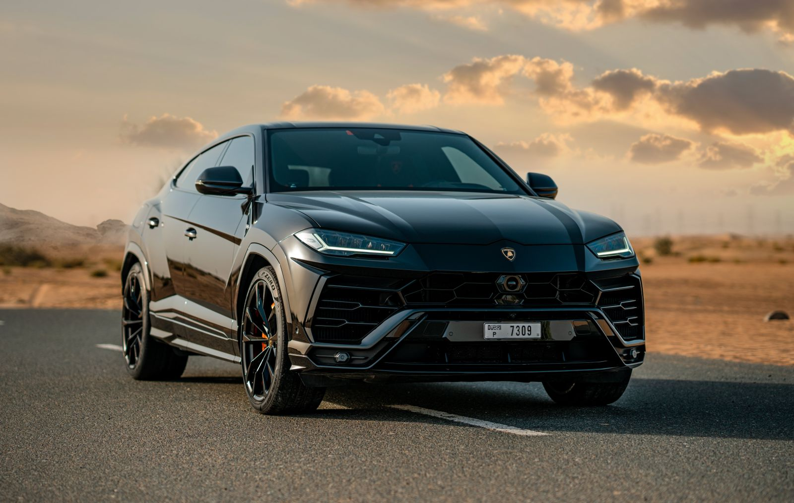

No. 1
Lamborghini Urus
Best for: doing everything, loudly
Lamborghini calls it the world's first Super SUV, and it earns the name. A twin-turbo 4.0L V8 pushes this five-seater to 60 mph in about 3.6 seconds, yet it still has room for the family and the luggage. It has the sharp, angular Lamborghini styling and a wild exhaust note, and you can drive it every day. It's the one car on this list that can go to the grocery store and then embarrass a sports car on the way home.
- 641 hpPower
- 3.6 s0-60 mph
- 190 mphTop speed
- ~$230KPrice